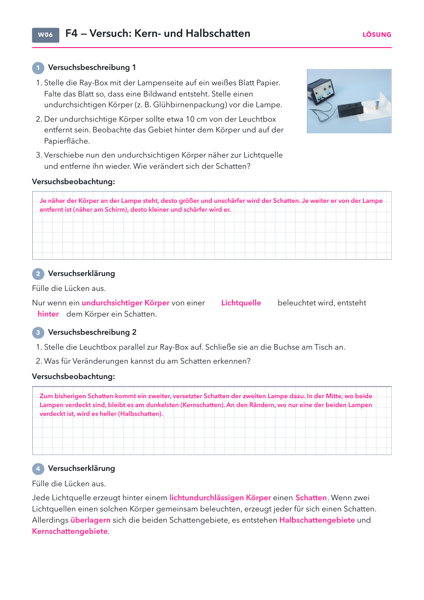

- Versuchsblatt: Seite 1, eins pro Schüler. Für „2 auf 1“ ist es mit zwei Versuchen zu lang.
- Folien und Lösungen: nicht drucken.
Material
Demo (für dich)
| Material | Anzahl | Hinweis |
|---|---|---|
| nicht nötig | ||
Schülerversuch (pro Gruppe)
| Material | Anzahl | Hinweis |
|---|---|---|
| Ray-Box mit Stromanschluss | 1× | Lampenseite zum Körper |
| zweite Lichtquelle | 1× | Leuchtbox oder zweite Ray-Box, an die Buchse am Tisch |
| weißes Blatt Papier | 1× | als Bildwand gefaltet |
| undurchsichtiger Körper | 1× | z. B. Glühbirnenpackung |
Die Stunde
Eine Lampe, zwei Lampen: Was ist anders? Leitfrage 4.
In Gruppen, erst eine Lichtquelle, dann zwei. Versuchsblatt.
Schattenraum und Schattenbild, Kern- und Halbschatten zeichnen.
Beispiele mündlich, Frage nach dem Halbschatten.
Antwort auf Leitfrage 4 ins Heft, Handzeichen, Lösung.
Beobachte
Warum hat ein Schatten manchmal weiche Ränder?


6. Schattenraum und Schattenbild
7. Kern- und Halbschatten
Schatten im Alltag
| im Alltag | was man sieht | warum |
|---|---|---|
| Flutlicht im Stadion | jeder Spieler hat vier Schatten | Vier Masten sind vier Lichtquellen. Jede erzeugt einen Schatten. |
| OP-Lampe | fast kein Schatten auf dem Tisch | Viele Lampen leuchten aus vielen Richtungen in jeden Schatten hinein. |
| Sonne an einem klaren Tag | dunkler, fast scharfer Schatten | Es gibt nur eine Lichtquelle, und sie ist sehr weit weg. |
| bewölkter Tag | kaum ein Schatten | Die ganze Wolkendecke leuchtet, das Licht kommt von überall. |
| Hand unter Schreibtisch- und Deckenlampe | zwei Schatten, in der Mitte dunkler | Wo beide Lampen verdeckt sind, ist Kernschatten, sonst Halbschatten. |
Warum hat ein Schatten manchmal weiche Ränder?
Check zu Leitfrage 4
1) Wo entsteht ein Kernschatten?
- Dort, wo Licht von allen Lichtquellen ankommt
- Dort, wo von keiner Lichtquelle Licht ankommt
- Nur bei Sonnenlicht
- Direkt an der Lampe
2) Zwei Lampen beleuchten einen Körper. Was siehst du auf dem Schirm?
- Nur einen scharf begrenzten Schatten
- Gar keinen Schatten
- Einen Kernschatten und zwei Halbschatten
- Zwei Kernschatten ohne Halbschatten
Lösung
Schattenraum und Schattenbild
- Ein Schatten ist kein Ding, sondern ein Gebiet ohne Licht. Der Schattenraum ist dreidimensional, das Schattenbild ist nur der Teil, der auf eine Fläche trifft.
- Größe: Je näher der Körper an der Lampe steht, desto größer wird das Schattenbild. Man sieht es an den geraden Linien von der Lampe über die Ränder des Körpers. Das Buch zeigt das auf S. 34 an einer Dinosaurier-Figur.
- Typische Fehlvorstellungen: Der Schatten sei ein dunkles Abbild mit allen Einzelheiten. Der Schatten gehöre zum Körper und sei auch im Dunkeln da.
Kern- und Halbschatten
- Zwei Lampen: Im Kernschatten kommt von keiner Lampe Licht an, im Halbschatten von einer. Bei mehr Lampen gibt es mehrere, unterschiedlich helle Halbschatten.
- Ausgedehnte Lichtquellen (Leuchtstoffröhre, Fenster, Sonne) kann man sich als viele kleine Lichtquellen nebeneinander denken. Dann geht der Schatten ohne Stufe ins Helle über, der Rand wird weich. Eine punktförmige Lichtquelle gibt einen scharfen Rand.
- Blick von der Wand zur Lampe: Aus dem Kernschatten sieht man keine Lampe, aus dem Halbschatten eine, aus dem hellen Bereich beide. Das beantwortet die Frage auf Folie 6.
- Die Sonne ist auch eine ausgedehnte Lichtquelle. Das ist die Brücke zu Leitfrage 5 (Sonnen- und Mondfinsternis).
- Typische Fehlvorstellung: Der Halbschatten sei „ein halber Schatten“ des Körpers, also nur seine halbe Größe.
Tipps zum Versuch
- Raum abdunkeln. Den Körper etwa 10 cm vor die Lampe stellen, dann ist der Schatten gut zu sehen.
- Die beiden Lampen dicht nebeneinander stellen. Rücken sie weiter auseinander, rücken auch die Schatten auseinander.
- Überlappen sich die beiden Schatten nicht mehr, gibt es keinen Kernschatten mehr, nur zwei Halbschatten. Gute Zusatzfrage für schnelle Gruppen.
Schatten im Alltag
- Im Stadion stehen die Flutlichtmasten in den Ecken. Deshalb hat jeder Spieler vier Schatten, das Buch zeigt das auf S. 35.
- Die OP-Lampe hat viele Einzellampen in einem großen Ring. So wirft die Hand des Arztes keinen dunklen Schatten auf die Wunde.
Ideen aus Erlebnis Physik 7–9
| Seite | Idee und so geht's | Passt zu |
|---|---|---|
| S. 34 | Schattengröße. Eine Figur zwischen Lampe und Wand verschieben. Näher an der Lampe wird der Schatten größer. Gut als Je-desto-Satz. | Folie 4 |
| S. 35 | Flutlicht. Ein Foto eines Spielers mit vier Schatten als Gesprächsanlass: Woher kommen die Schatten? | Folie 6 |
| S. 36–37 | Schattenversuche. Taschenlampe und Radiergummi auf gefaltetem Papier (Schattenbild). Zwei Taschenlampen auf einen Mitschüler an der Wand: Wann gibt es zwei Schatten, wann nur einen? Geht auch als Demo vorne, wenn Ray-Boxen fehlen. | Folie 3 bis 5 |
Versuchsblatt Kern- und Halbschatten
PDF öffnenLösung Versuch 1: Je näher der Körper an der Lampe steht, desto größer und unschärfer wird der Schatten. Lücken: undurchsichtiger Körper, Lichtquelle, hinter.
Lösung Versuch 2: Ein zweiter, versetzter Schatten kommt dazu. In der Mitte bleibt es am dunkelsten (Kernschatten), an den Rändern wird es heller (Halbschatten). Lücken: lichtundurchlässigen Körper, Schatten, überlagern, Halbschattengebiete, Kernschattengebiete.
Schattenlabor
Labor öffnenAlle LaborePasst nach Folie 5: Im Labor Folie 3 bis 5 zeigen (zwei Lichtpunkte, Kern- und Halbschatten, Regler für Lampengröße und Abstände). Die Lampengröße kann man mit der Ray-Box nicht verändern. Folie 6 (Finsternisse) als Ausblick.